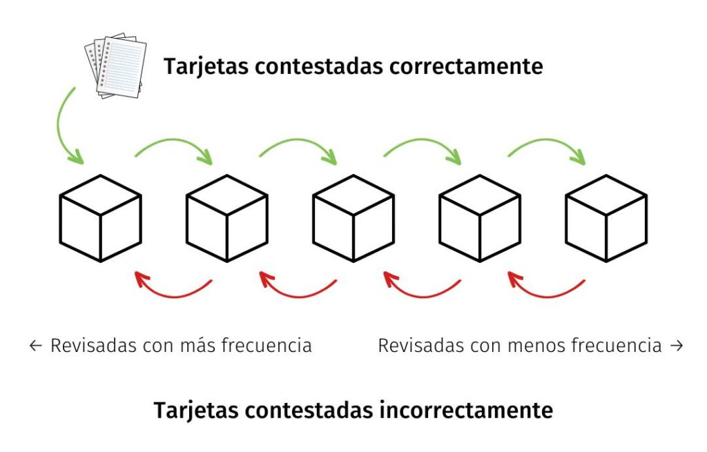
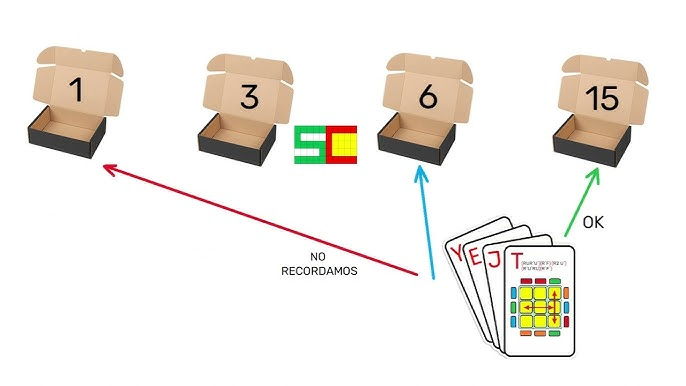
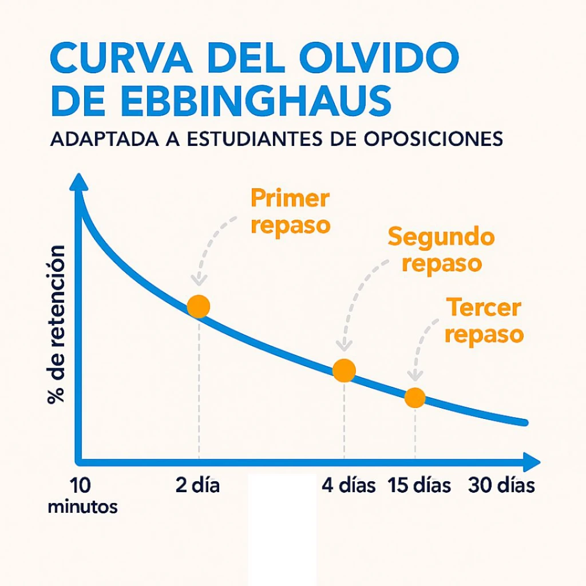

Repetición Espaciada
es una técnica de aprendizaje memorístico que consiste en aprender un material determinado dejando pasar espacios de tiempo cada vez más largos
La técnica de repetición espaciada consiste en distribuir el repaso de los contenidos a lo largo del tiempo para mejorar la memoria a largo plazo. Al repasar con intervalos crecientes, la información se consolida y se evita el olvido.
Que es?
La repetición espaciada es un método científicamente probado que consiste en repasar la información a intervalos más cortos, lo que potencia la memoria y reduce la probabilidad de olvidarlo todo. Estudios demuestran que puede mejorar significativamente el aprendizaje y reducir el tiempo dedicado al estudio. En este artículo, explicaremos cómo usar la repetición espaciada y el método 2357 para planificar tus sesiones de repaso, así como algunos métodos sencillos que puedes usar.

Pasos para hacerlo
Inmediatamente después de una lección : resuma los puntos clave con sus propias palabras, cree una guía de estudio o haga tarjetas didácticas.
Al día siguiente : use el recuerdo activo para ponerse a prueba sin mirar sus notas
Tres días después : vuelva a ponerse a prueba, intente decir bruscamente , la técnica de Feynman o haga preguntas de exámenes anteriores
Una semana después : siga probando e identifique con qué tiene más dificultades, concéntrese en eso.

Beneficios:
Mayor retención de información.
Evita estudiar de manera masiva (cramming).
Permite reforzar los conocimientos de manera progresiva.
Ejemplo práctico:
Si aprendes un concepto hoy, lo repasas mañana, luego a los 3 días, luego a los 7, y así sucesivamente.
Ejemplo: la curva del olvido muestra cómo olvidamos si no repasamos a intervalos.
